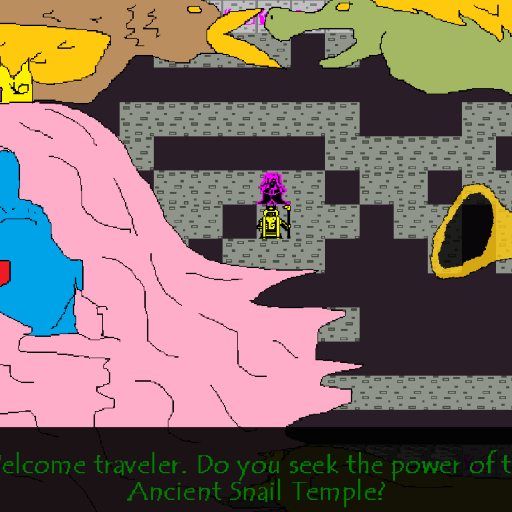

A project from the 100 Games in 5 Years archive.

Game 99/100
Ancient Temple of the Sacred Snails
A project from the 100 Games in 5 Years archive.
Year2017
Development1 day
AvailabilityPlayable

Game 99/100
A project from the 100 Games in 5 Years archive.
A project from the 100 Games in 5 Years archive.